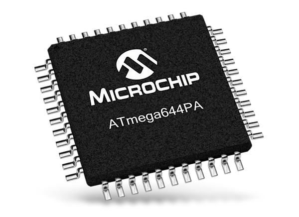
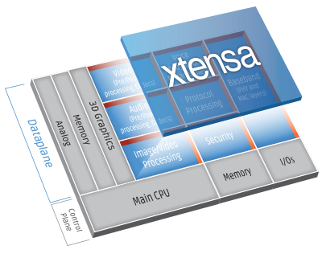
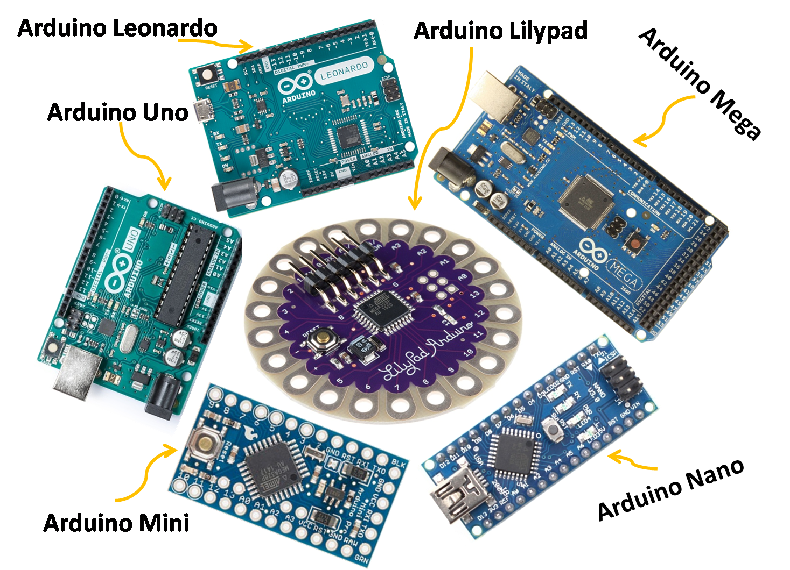
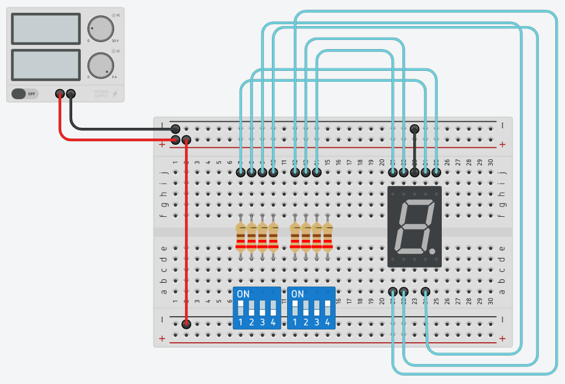
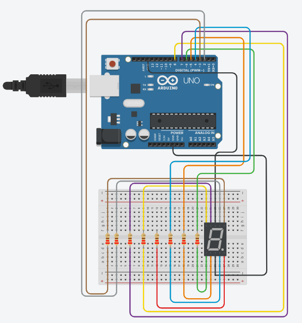

Electronics, Embedded Programming
What is embedded system?
An embedded system is a specialized computer system that is designed to perform specific tasks and functions within a larger device or system. It is embedded within a larger device or product and operates with dedicated hardware and software to perform specific functions.
Embedded systems are often designed to operate in real-time and are programmed to respond to specific inputs or stimuli. They can be found in a wide range of products, including consumer electronics, automotive systems, medical devices, industrial control systems, and more.
Embedded systems are typically designed with limited resources such as memory, processing power, and input/output capabilities. They are optimized for specific tasks and are often programmed to perform their functions with maximum efficiency and reliability. The design of embedded systems requires a deep understanding of both hardware and software design principles, as well as the specific application requirements.
What is a microcontroller system?
Microcontroller systems are installed frameworks that coordinate a microchip, memory, and info/yield peripherals on a solitary chip. They're modified to perform explicit capabilities, require low power utilization, and are regularly utilized in little gadgets like domestic devices, toys, and clinical gadgets. They're profoundly proficient, minimal expense, and can be modified for explicit applications.
Here are some of the common microcontroller such as:
- Atmel (ATTiny 45, 44, 412, 1614; ATMega 328, 3u24)
- Xtensa (ESP8266, ESP32; Integrated RF, Bluetooth, networking)
Arduino Embedded System comprises of
Software & Software Tools:
- Integrated Development system (IDE)
- Arduino programming language (based on Processing) /p>
- Development & Debugging Tools
- Software libraries
Hardware:
- ATmel processor boards (and others)
- Shields (add-on modules)
- Sensors, actuators, peripherals
Open Source Platform
What is an Arduino System?
An Arduino framework is an open-source microcontroller stage that comprises of an equipment board and a coordinated improvement climate (IDE) for programming. It is intended to be not difficult to utilize and can be modified utilizing the Arduino IDE. The board incorporates a microcontroller and input/yield pins for connecting with different parts. Arduino frameworks are utilized in various applications and are famous among specialists, understudies, and experts. They are open-source, considering free change and conveyance of equipment plans and programming code. The dynamic local area of clients and engineers has made various tasks and libraries that can be handily shared and reused.
Why use Arduino System?
User-friendly: The Arduino system is designed to be user-friendly and accessible, even for those with limited programming experience. The simplified programming language, easy-to-use IDE, and extensive online resources make it easy to get started and learn new skills.
Versatile: The Arduino system can be used to control a wide range of inputs and outputs, including sensors, lights, motors, and displays. It can be used in a variety of applications, including robotics, automation, and Internet of Things (IoT) devices.
Affordable: Arduino boards are relatively inexpensive compared to other microcontroller platforms, making it an affordable option for hobbyists, students, and professionals alike.
Open-source: Arduino is an open-source platform, which means that the hardware and software specifications are freely available for anyone to use and modify. This has led to a large community of users and developers who contribute to the platform, creating new projects, libraries, and tutorials.
Overall, the Arduino system provides a user-friendly, versatile, and affordable platform for building and programming microcontroller-based projects, making it a popular choice among hobbyists, students, and professionals alike.
Variations of the Uno
There are more than 10 type of variations od Uno but is programming and usage are basically the same with some minor variations.
All the boards use the ATMega328P processor but maybe in different formats
All boards have the same I/O pins
Difference is in the cost of the Uno, the more high end board which is usually more expensive uses the FTDI chip.
Arduino Uno
Is the most common microcontroller board to begin with. It uses a Atmel Atmega328P processor with a separate programmable interface using another Atmel processor and USB. Has sockets for interfacing and power.
Uno board features
A typical uno board features
Power
- Can be powered from USB port ((<0.5A)
- External power from DC jack 6V ~ 12V
- Power outputs: 0 (GND), 3.3V, 5.0V (up to 0.3A), Vref (5V)
Digital Input/Output pins
- Can be configured as Input, Output or Pull-Up Inputs
- Has Pulse-Width-Modulation on ~ indicated Pins
- Built-in LED on Pin13
Analog Inputs
- 10-bit Analog inputs
Others
- Serial I/O interface
- I2C interface
- SPI interface
Programming the Uno
Requires an Integrated Development Environment
- Download from Arduino.CC
- Suggest using v2.0 BETA because of features such as Syntax highlighting, auto assist in typing keywords
Arduino programs are called sketches
- In text
- Have extension .ino
setup()
Excuted only ONCE after each powerup or reset of the UNO
UNO automatically reset after each successful uploading of sketch
Contains:
- Initialization code
- Initialization of variables
- Setup and configuration of I/O ports
- Setup of other interface
lopp()
Is a function that executed after the setup() code completes
Infinitely executing code within the loop() function
Place your code/program within this function, there is NO stopping this code
Coding Tips
Is based on C++ programming language (Actually Processing)
Good C++ programming habits:
- Use comments
- Indent your code
- Use UPPERCASE to denote constant or defines
- Nmae your variables intelligently
Digital Input/Output
ATMega328 has 14 digital I/O Pins
- labelled pin0 to pin13
- Pin0(Tx), Pin1(Rx) are assigned as Serial I/O
- Pin3, Pin5, Pin6, Pin9, Pin10 and Pin11 have PWM functionality
Digital values
- 0 (0 V, GND, ON, LOW)
- 1 (5 V, Vcc, OFF, HIGH - typically > 3.3 V)
Some pins are multifunctional, i.e. have different functions depending on how they are initialized.
- Inputs (default)
- Inputs with pull-up resistors
- Outputs
- Pulse Width Modulation outputs
Useful function and libraries simplifying these operations:
- pinMode() - initialises the pin
- digitalRead() - reads/inputs a digital value
- digitalWrite() - outputs a digital value
- analogWrite() - outputs a PWM
pinMode(pin,MODE)
Configures specified pin to behave either as input or output
Modes available
- INPUT; digital input mode (high-impedance states)
- NPUT_PULLUP; digital input mode with internal 20K-50K ohm pull-up resistor
OUTPUT; digital output mode able to source up to 40mA per pin, total of 200mA per chip
Arduino System
Programs written for the Arduino system are text files called sketches (extension .ino)
The programming language used is based on Processing, which is based on the C++ syntax
Sketches
All Arduino sketches have 2 functions:
- setup(); code is executed only once used for initialisation and setup of I/O
- loop(); code is executed continuously application code is placed here
Variables
Variables are memory set aside to hold changing data
Variables use different amounts of memory depending on the data type used.
Common data types are:
- char; 8-bit
- int; 16-bit
- float; 32-bit
- String; stores a sequence of character
We use identifiers (names) to name the variable and locate it
Use conversion functions to convert between them
Operators
Arithmetic
Boolean Operators
Compound Operators
Bitwise Operators
Boolean
Variables have only 2 values: True/Flase
Expressions have only 2 results: True/Flase
Comparison operators give boolean results
Condition: if ... else
Control Structure which checks the condition expression and if true executes the following code block.
Condition Expression is a Boolean expression
When used with the else, control transfers to the else block
Can have nested or have multiples else-if conditionals for more granular control
Condition: switch ... case
Control Structure which checks the value in switch (preferably ordinal) and transfers control to the matching case code block.
Each case code block must be terminated with a break.
Control is transferred to the default code block (if any) if there is no match
Loop: for
Structure of for
- Initialization
- Conditional expression
- Increment
Used when we know exactly the number of times we wish to loop
Loop: while
Tests conditional expression, if true the code block is executed
Indefinte loop, code block is executed zero, once or many times
If the condition results always in True, we have an endless loop.
Loop: do ... while
Executes the code block before testing the conditional expression.
If conditional expression is true the code block is repeated
Indefinte loop, code block is executed once or many times.
If the condition results always in True, we have an endless loop.
Control: break
When used in a loop, break exits the loop, control transfers to next statement after loop
break is also used to transfer control out of a matching case in a switch statement
Control: continue ignores the remaining statements and transfers control to the loop condition.(not commonly used)
Functions
A function is identified using ()
A function is a block of code that can accept parameters
Executes the code when called, returns a single value as it’s name
return is used to return the value in the indicated data type.
Arrays
Arrays is a data type which can hold multiple values in a single variable
The values must be of the same data type, as defined by the array.
Each element can be accessed using an index, which starts from 0.
You can identify an array by the “[ ]”
Class
A user-defined data type that is used to create objects.
An object has
- Attributes (Constant, Variables)
- Methods (Functions)
An object’s attributes and methods are accessed using the dot (.) operator
Classes are predominantly used in code libraries
Directive: #define
#define is a compiler directive and not a code statement.
Does not end with a semi-colon
Used to name a constant an assign the value
const is the preferred method of defining constants
Directive: #include
#include is a compiler directive and not a code statement.
Does not end with a semi-colon
Instructs the compiler to read and insert code from the target file
< file > indicates system library, found along the library path
“ file “ indicates local file in same folder
Exercise 7: Segment LED Timer
Made up of 7 separate LEDs
Combined in segments, forms digits
Changes the switches to see the effect
Assignment: A Countdown Timer
- Experiment with the 7-Segment Circuit
- Convert the circuit which uses an Uno to control the 7-segment CC display
- Write a program that counts from 0 to 9 continuously
